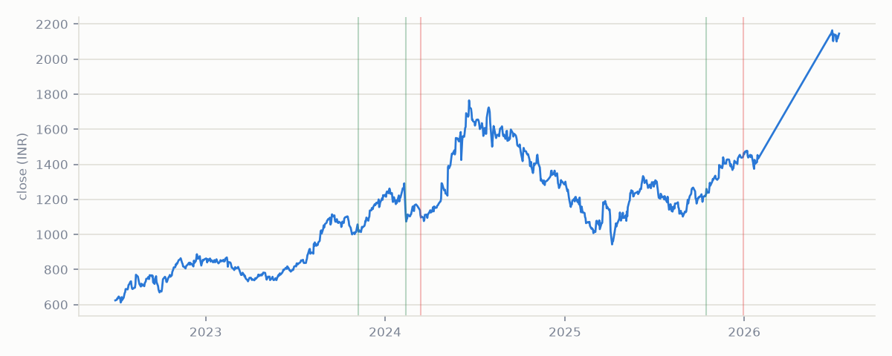

obscura
·
intel
Live feed
Tickers
Methodology
About
Forgings
Bharat Forge Ltd
BHARATFORG

Events detected
5
Most recent
2025-12-30
Max intensity
95.9
th pct
Event history
Date
Direction
Intensity
Novelty
2025-12-30
− tone
90.5th pct
75
2025-10-16
+ tone
95.9th pct
582
2024-03-13
− tone
64.9th pct
30
2024-02-12
+ tone
61.2th pct
97
2023-11-07
+ tone
58.3th pct
first seen